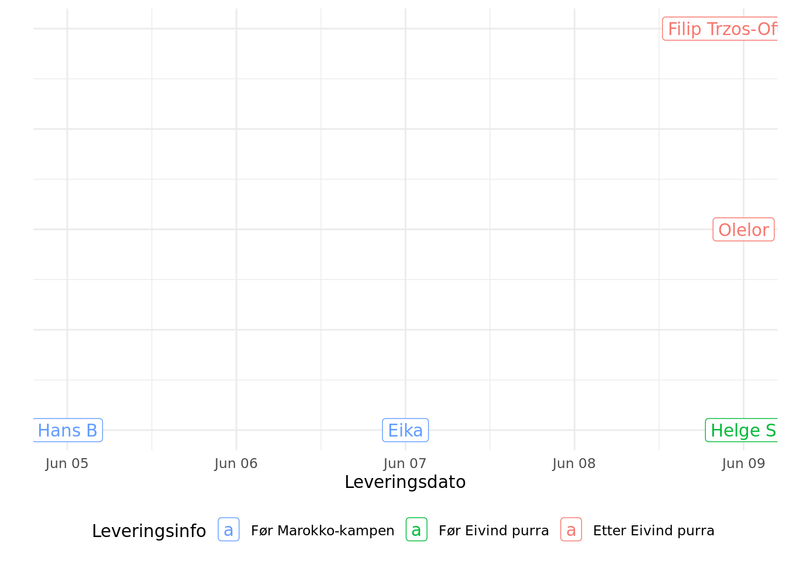
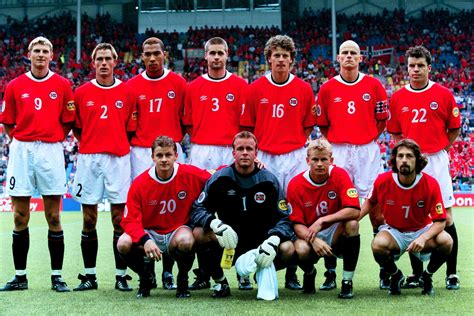
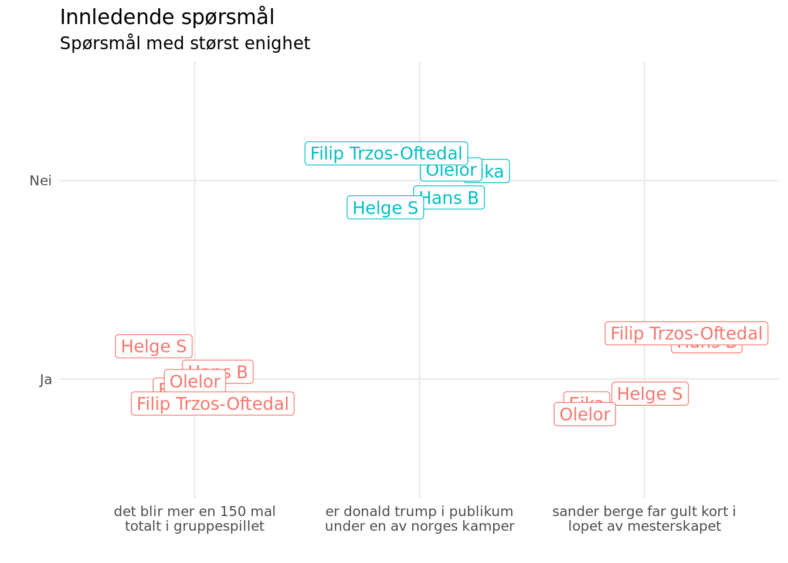
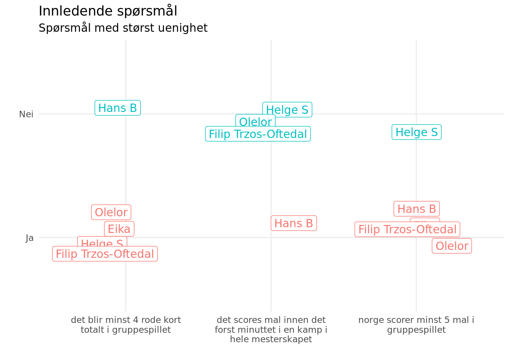
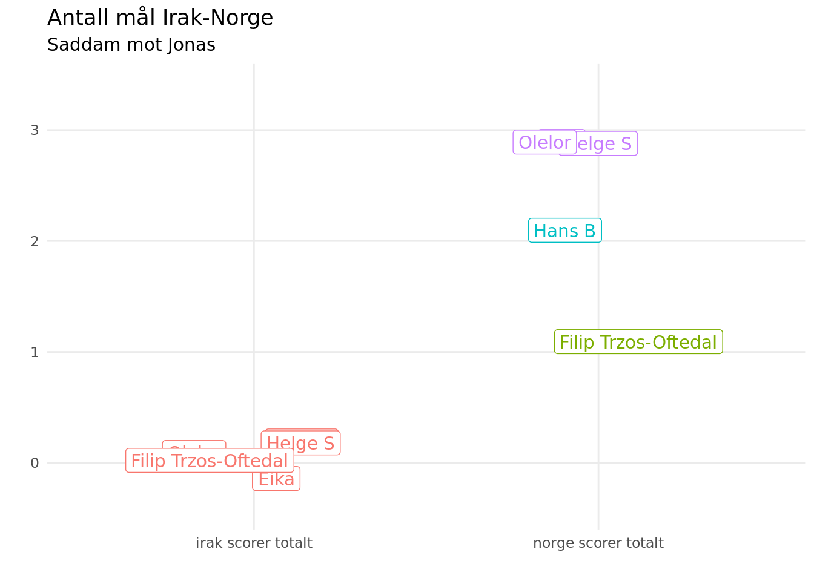
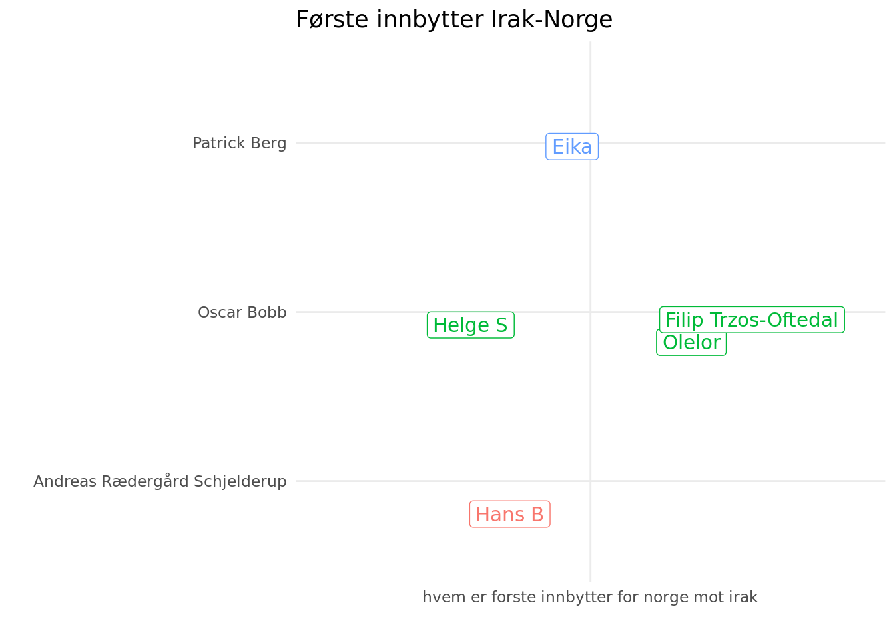
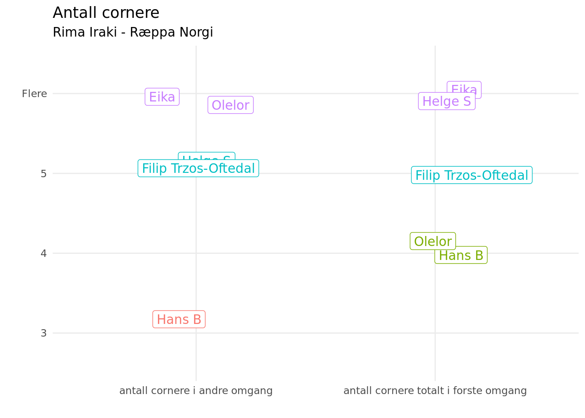
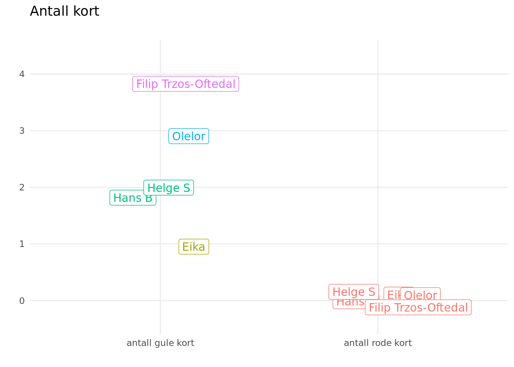

⚽ VM-tuppekunkurranse – Resultater 🏆
Denne rapporten viser resultatene fra VM-tuppekunkurransen. Utrolig avansert analyse er anvendt for å tolke innsendte tippelapper. Analysene tyter ut i figurer og tabeller i det følgende notatet. Si gjerne fra om du har forslag til analyser eller ser feil i dataene.
God lesning!
Notatet er oppdatert 10. juni 2026.
1 Datagrunnlag

Her kommer det sylskarpe analyser av svarene som er sendt inn. Analysene handler mest om å sette opp foreløpig stilling i tippekonkurransen, holde motet oppe for de som ikke har fått så mange rett foreløpig og å la de som har tippet ulikt få vite det. Den siste kan kanskje generere små bets foran TV-skjermen?
Vi har fått inn 5 svar. Figuren viser når disse svarene har kommet inn. Mange har ventet i det lengste for å få inn så stort beslutningsgrunnlag som mulig. Andre har nok glemt å fylle ut.
2 Innledning
Er vi enige om noe. Det viser seg at ja, jammen er vi det. Figuren viser spørsmål hvor det er størst grad av enighet

Men vi er også uenige om mye. Figuren viser spørsmål hvor vi har vært mest delte i svarene.

3 Gruppespill
Praksisen med gruppespill i fotball-VM går faktisk helt tilbake til det aller første verdensmesterskapet i 1930. I VM i Uruguay i 1930 ble lagene delt inn i grupper (round robin), og gruppevinnerne gikk videre til semifinaler. Men formatet har ikke vært helt likt hele tiden:
1934 og 1938: ingen gruppespill – kun utslagsturnering fra start.
1950: gruppespillet kom tilbake (og finalen ble faktisk avgjort i en sluttgruppe).
Fra 1954 og utover: gruppespill + utslagsspill ble standardstrukturen som ligner det vi har i dag.
Dette betyr at ideen om grupper – der lag møtes flere ganger før utslagsrunder – har vært sentral i VM nesten helt siden starten. Har det noe å si for vår felles evne til å gjette på lagenes prestasjoner i gruppene?
3.1 Dypdykk gruppe A-D
Den neste tabellen viser et innblikk i grupperesultatene som var mest typiske og mest utypiske i tippekupongene. I den første tabellen vises de grupperesultatene som flest har tippet.
Gruppe | Mest vanlig rekkefølge | Hvem |
|---|---|---|
A | Mexico, Sør-Korea, Tsjekkia, Sør-Afrika | Hans B, Filip Trzos-Oftedal |
B | Sveits, Bosnia-Hercegovina, Canada, Qatar | Hans B, Olelor, Filip Trzos-Oftedal |
C | Brasil, Marokko, Skottland, Haiti | Eika, Helge S |
D | Tyrkia, Australia, USA, Paraguay | Eika, Olelor |
I den neste tabellen vises de grupperesultatene som færrest har valgt. Husk å si fra til de som har tippet mest idiotisk!
Gruppe | Mest uvanlige rekkefølge | Hvem |
|---|---|---|
A | Mexico, Sør-Afrika, Tsjekkia, Sør-Korea | Helge S |
B | Sveits, Qatar, Bosnia-Hercegovina, Canada | Eika |
C | Brasil, Skottland, Marokko, Haiti | Hans B |
D | USA, Tyrkia, Paraguay, Australia | Filip Trzos-Oftedal |
4 Irak-kampen
Irak er et land i Midtøsten som ligger mellom Iran i øst og Syria og Jordan i vest. Landet har en lang og rik historie som går helt tilbake til oldtiden, da området var kjent som Mesopotamia – ofte omtalt som «sivilisasjonens vugge» fordi noen av verdens første byer, skriftspråk og lover oppsto her. Skriftspråk og lover er to av sivilisasjonens fulltreffere, men hvor mange fulltreffere får vi i kampen?

Hovedstaden i Irak er Bagdad, som også er landets største by. Irak har et variert landskap med store elver som Eufrat og Tigris, fruktbare sletter og ørkenområder. Disse elvene har vært avgjørende for jordbruk og bosetting gjennom tusenvis av år. Nå spør vi hvem som blir Norges første “innvandrer” på banen.

Befolkningen i Irak består hovedsakelig av arabere og kurdere, og de fleste er muslimer, enten sunni eller sjia. Landet har de siste tiårene vært preget av konflikter og politisk uro, men det jobbes fortsatt med å bygge stabilitet og utvikling. Den kurdiske delen av Irak ligger i nordøstre hjørnet. Hvor mange hjørnespark blir det i kampen?

Til tross for utfordringene har Irak store naturressurser, spesielt olje, som er en viktig del av økonomien. Og selv om vi kan være enige om at det er en næring som kommer til å være like viktig i fremtiden som i dag, er det ikke sikkert vi er like enige om alt på banen. Vi spør hvor mange kort blir delt ut?

5 Appendix
5.1 Gamle analyser
5.2 Tippelapper
spm | tekst | poeng | Hans B | Eika | Helge S | Olelor | Filip Trzos-Oftedal |
|---|---|---|---|---|---|---|---|
Klubblaget ditt | Arsenal | Ulf | Havdur | Lorene | Hinna FK | ||
Q1 | norge scorer minst 5 mal i gruppespillet | 1 | Ja | Ja | Nei | Ja | Ja |
Q2 | sander berge far gult kort i lopet av mesterskapet | 1 | Ja | Ja | Ja | Ja | Ja |
Q3 | det blir minst 4 rode kort totalt i gruppespillet | 1 | Nei | Ja | Ja | Ja | Ja |
Q4 | det blir mer en 150 mal totalt i gruppespillet | 1 | Ja | Ja | Ja | Ja | Ja |
Q5 | det scores mal innen det forst minuttet i en kamp i hele mesterskapet | 1 | Ja | Nei | Nei | Nei | Nei |
Q6 | norge scorer pa hjornespark i lopet av mesterskapet | 1 | Ja | Ja | Ja | Nei | Ja |
Q7 | er donald trump i publikum under en av norges kamper | 1 | Nei | Nei | Nei | Nei | Nei |
Q8 | hvem av disse spillerene spiller flest minutter for norge totalt i vm | 2 | Morten Thorsby | Patrick Berg | Jørgen Strand Larsen | Patrick Berg | Patrick Berg |
Q9 | norge scorer totalt | 1 | 2 | 3 | 3 | 3 | 1 |
Q10 | irak scorer totalt | 1 | 0 | 0 | 0 | 0 | 0 |
Q11 | hvem er forste innbytter for norge mot irak | 2 | Andreas Rædergård Schjelderup | Patrick Berg | Oscar Bobb | Oscar Bobb | Oscar Bobb |
Q12 | antall cornere totalt i forste omgang | 2 | 4 | Flere | Flere | 4 | 5 |
Q13 | antall cornere i andre omgang | 2 | 3 | Flere | 5 | Flere | 5 |
Q14 | antall rode kort | 2 | 0 | 0 | 0 | 0 | 0 |
Q15 | antall gule kort | 2 | 2 | 1 | 2 | 3 | 4 |
Q16 | norge scorer totalt2 | 1 | 1 | 2 | 1 | 2 | 3 |
Q17 | sengal scorer totalt | 1 | 1 | 1 | 2 | 1 | 2 |
Q18 | hvem er forste innbytter for norge mot senegal | 2 | Fredrik André Bjørkan | Oscar Bobb | Patrick Berg | Kristian Thorstvedt | Andreas Rædergård Schjelderup |
Q19 | antall cornere totalt i forste omgang2 | 2 | 3 | Flere | 3 | 3 | 4 |
Q20 | antall cornere i andre omgang2 | 2 | 4 | Flere | 3 | 5 | 4 |
Q21 | antall rode kort2 | 2 | 1 | 0 | 0 | 1 | 0 |
Q22 | antall gule kort2 | 2 | 4 | 2 | 3 | 0 | Flere |
Q23 | norge scorer totalt3 | 1 | 0 | 1 | 2 | 1 | 2 |
Q24 | frankrike scorer totalt | 1 | 2 | 0 | 2 | 3 | 2 |
Q25 | hvem er forste innbytter for norge mot frankrike | 2 | Leo Skiri Østigård | Jørgen Strand Larsen | Oscar Bobb | Andreas Rædergård Schjelderup | Andreas Rædergård Schjelderup |
Q26 | antall cornere totalt i forste omgang3 | 2 | 4 | Flere | 4 | 4 | Flere |
Q27 | antall cornere i andre omgang3 | 2 | 5 | Flere | 3 | 4 | Flere |
Q28 | antall rode kort3 | 2 | 0 | 0 | 0 | 0 | 0 |
Q29 | antall gule kort3 | 2 | 3 | 1 | 3 | 1 | 2 |
Q30 | eksakt antall poeng for norge i gruppespillet | 0 | 7 poeng | 6 poeng | 4 poeng | 6 poeng | 6 poeng |
Q31.1 | Gruppevinner A | 1 | Mexico | Sør-Korea | Mexico | Sør-Korea | Mexico |
Q31.2 | Gruppetoer A | 1 | Sør-Korea | Mexico | Sør-Afrika | Mexico | Sør-Korea |
Q31.3 | Gruppetreer A | 1 | Tsjekkia | Tsjekkia | Tsjekkia | Tsjekkia | Tsjekkia |
Q31.4 | Gruppetaper A | 1 | Sør-Afrika | Sør-Afrika | Sør-Korea | Sør-Afrika | Sør-Afrika |
Q32.1 | Gruppevinner B | 1 | Sveits | Sveits | Canada | Sveits | Sveits |
Q32.2 | Gruppetoer B | 1 | Bosnia-Hercegovina | Qatar | Sveits | Bosnia-Hercegovina | Bosnia-Hercegovina |
Q32.3 | Gruppetreer B | 1 | Canada | Bosnia-Hercegovina | Bosnia-Hercegovina | Canada | Canada |
Q32.4 | Gruppetaper B | 1 | Qatar | Canada | Qatar | Qatar | Qatar |
Q33.1 | Gruppevinner C | 1 | Brasil | Brasil | Brasil | Marokko | Marokko |
Q33.2 | Gruppetoer C | 1 | Skottland | Marokko | Marokko | Brasil | Brasil |
Q33.3 | Gruppetreer C | 1 | Marokko | Skottland | Skottland | Skottland | Skottland |
Q33.4 | Gruppetaper C | 1 | Haiti | Haiti | Haiti | Haiti | Haiti |
Q34.1 | Gruppevinner D | 1 | Tyrkia | Tyrkia | Tyrkia | Tyrkia | USA |
Q34.2 | Gruppetoer D | 1 | USA | Australia | USA | Australia | Tyrkia |
Q34.3 | Gruppetreer D | 1 | Paraguay | USA | Paraguay | USA | Paraguay |
Q34.4 | Gruppetaper D | 1 | Australia | Paraguay | Australia | Paraguay | Australia |
Q35.1 | Gruppevinner E | 1 | Tyskland | Tyskland | Tyskland | Tyskland | Tyskland |
Q35.2 | Gruppetoer E | 1 | Elfenbenskysten | Ecuador | Elfenbenskysten | Elfenbenskysten | Elfenbenskysten |
Q35.3 | Gruppetreer E | 1 | Ecuador | Elfenbenskysten | Ecuador | Ecuador | Ecuador |
Q35.4 | Gruppetaper E | 1 | Curaçao | Curaçao | Curaçao | Curaçao | Curaçao |
Q36.1 | Gruppevinner F | 1 | Nederland | Nederland | Nederland | Nederland | Nederland |
Q36.2 | Gruppetoer F | 1 | Tunisia | Japan | Tunisia | Sverige | Sverige |
Q36.3 | Gruppetreer F | 1 | Japan | Sverige | Japan | Japan | Japan |
Q36.4 | Gruppetaper F | 1 | Sverige | Tunisia | Sverige | Tunisia | Tunisia |
Q37.1 | Gruppevinner G | 1 | Belgia | Belgia | Belgia | Belgia | Belgia |
Q37.2 | Gruppetoer G | 1 | Egypt | Iran | Egypt | Egypt | Egypt |
Q37.3 | Gruppetreer G | 1 | Iran | Egypt | Iran | New Zealand | Iran |
Q37.4 | Gruppetaper G | 1 | New Zealand | New Zealand | New Zealand | Iran | New Zealand |
Q38.1 | Gruppevinner H | 1 | Spania | Spania | Spania | Spania | Spania |
Q38.2 | Gruppetoer H | 1 | Uruguay | Uruguay | Uruguay | Uruguay | Uruguay |
Q38.3 | Gruppetreer H | 1 | Saudi-Arabia | Saudi-Arabia | Saudi-Arabia | Saudi-Arabia | Saudi-Arabia |
Q38.4 | Gruppetaper H | 1 | Kapp Verde | Kapp Verde | Kapp Verde | Kapp Verde | Kapp Verde |
Q39.1 | Gruppevinner I | 1 | Frankrike | Frankrike | Frankrike | Frankrike | Frankrike |
Q39.2 | Gruppetoer I | 1 | Norge | Norge | Norge | Norge | Norge |
Q39.3 | Gruppetreer I | 1 | Senegal | Senegal | Senegal | Senegal | Senegal |
Q39.4 | Gruppetaper I | 1 | Irak | Irak | Irak | Irak | Irak |
Q40.1 | Gruppevinner J | 1 | Argentina | Argentina | Argentina | Argentina | Argentina |
Q40.2 | Gruppetoer J | 1 | Østerrike | Østerrike | Algerie | Algerie | Østerrike |
Q40.3 | Gruppetreer J | 1 | Algerie | Algerie | Østerrike | Østerrike | Algerie |
Q40.4 | Gruppetaper J | 1 | Jordan | Jordan | Jordan | Jordan | Jordan |
Q41.1 | Gruppevinner K | 1 | Portugal | Portugal | Portugal | Portugal | Portugal |
Q41.2 | Gruppetoer K | 1 | Colombia | Colombia | Colombia | Colombia | Colombia |
Q41.3 | Gruppetreer K | 1 | Usbekistan | Usbekistan | DR Kongo | DR Kongo | DR Kongo |
Q41.4 | Gruppetaper K | 1 | DR Kongo | DR Kongo | Usbekistan | Usbekistan | Usbekistan |
Q42.1 | Gruppevinner L | 1 | England | England | England | England | England |
Q42.2 | Gruppetoer L | 1 | Kroatia | Kroatia | Kroatia | Ghana | Kroatia |
Q42.3 | Gruppetreer L | 1 | Ghana | Panama | Ghana | Kroatia | Ghana |
Q42.4 | Gruppetaper L | 1 | Panama | Ghana | Panama | Panama | Panama |
Q43 | nar ryker spania ut | 3 | Kvartfinale | Vinner | Kvartfinale | Semifinale | Semifinale |
Q44 | nar ryker england ut | 3 | Semifinale | Semifinale | Kvartfinale | Semifinale | Semifinale |
Q45 | nar ryker argentina ut | 3 | Finale | Kvartfinale | 8-delsfinale | Finale | 8-delsfinale |
Q46 | nar ryker norge ut | 3 | 16-delsfinale | 8-delsfinale | 16-delsfinale | Kvartfinale | Kvartfinale |
Q47 | nar ryker usa ut | 3 | 16-delsfinale | 16-delsfinale | 8-delsfinale | 16-delsfinale | 16-delsfinale |
Q48 | nar ryker senegal ut | 3 | Gruppespill | 16-delsfinale | 16-delsfinale | 8-delsfinale | Gruppespill |
Q49 | nar ryker nederland ut | 3 | 16-delsfinale | Semifinale | 8-delsfinale | 8-delsfinale | Kvartfinale |
Q50 | hvilket lag vinner vm | 5 | Portugal | Spania | Frankrike | Frankrike | Portugal |
Q51 | det scores minst 3 mal i finalen | 3 | Nei | Ja | Ja | Ja | Nei |
Q52 | det scores mal i begge omgangene i finalen | 3 | Nei | Ja | Ja | Ja | Ja |
Q53 | det deles ut minst 5 gule kort i finalen | 3 | Nei | Nei | Nei | Nei | Ja |
Q54 | begge lag scorer i finalen | 3 | Nei | Ja | Ja | Ja | Ja |
Q55 | det scores mal innen de 20 forste minuttene | 3 | Nei | Nei | Nei | Nei | Nei |
Q56 | blir kampens forste gule kort delt ut for det har gatt 20 minutter | 3 | Ja | Nei | Nei | Nei | Ja |
Q57 | det blir tidelt minst 9 hjornespark i finalen | 3 | Nei | Ja | Ja | Ja | Ja |
Q58 | donald trump far en gullmedalje | 3 | Ja | Ja | Ja | Ja | Nei |
Q59 | vm vinneren taper ingen kamper i turneringen | 3 | Nei | Ja | Ja | Ja | Ja |
Q60 | minst 8 kamper avgjores pa straffesparkkonkurranse | 3 | Nei | Nei | Ja | Ja | Ja |
Q61 | england blir slatt ut etter straffesparkkonkurranse | 3 | Ja | Nei | Nei | Nei | Ja |
Q62 | norge spiller minst en kamp som avgjores pa straffesparkkonkurranse | 3 | Nei | Nei | Nei | Nei | Ja |
Q63 | norge holder nullen i minst en kamp | 3 | Ja | Ja | Ja | Ja | Ja |
Q64 | hvem blir toppscorer i vm | 5 | Noen andre | Harry Kane | Kylian Mbappe | Kylian Mbappe | Noen andre |